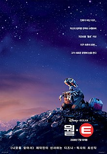

월-E
- 감독 앤드류 스탠튼
- 개봉년도 2008
- 상영시간 1시간 43분
- 전체 관람가
- 제프 갈린, 엘리사 나이트, 벤 버트, 앤드루 스탠턴
줄거리지구 최후의 로봇 ‘월•E’ 와 함께 떠나는 흥미진진! 무한상상! 로맨틱 어드벤처 블록버스터로 아카데미 상을 수상한 감독 겸 각본가 앤드류 스탠튼과, , , 를 탄생시킨 픽사 애니메이션 스튜디오의 재기 넘치는 이야기꾼, 천재적인 기술진들이 다시 한 번 손을 잡았다! 지구에서 그리 멀지 않은 은하계로 영화 팬들을 데려가 줄 그들의 어드벤처 블록버스터, 이 새로운 컴퓨터 애니메이션의 주인공은 ‘월•E’라는 이름의 뚝심 있는 로봇이다. 텅 빈 지구에 홀로 남아 수백 년이란 시간을 외롭게 일만 하며 보내던 월•E (WALL•E: Waste Allocation Load Lifter Earth-Class, 지구 폐기물 수거•처리용 로봇). 그런 그가 매력적인 탐사 로봇 ‘이브’와 마주친 순간, 잡동사니 수집만이 낙이던 인생에도 소중한 목표가 생긴다.